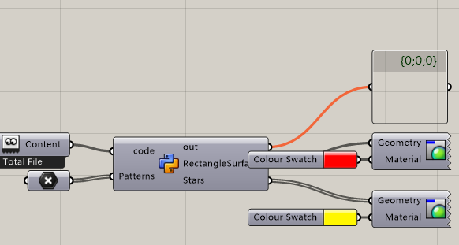
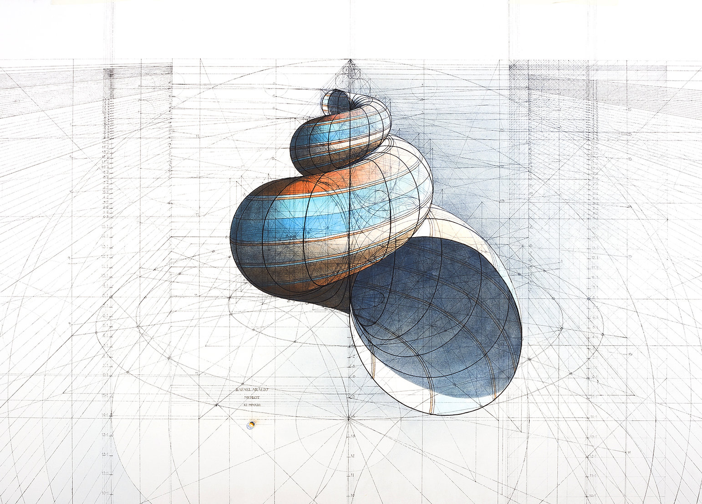

MAS dfab - Week 1 - Python Basics
Contents:
1. Transformation
a = int(a) b = str(3.14)
2. Floor division operator
print (8//3) #answer is 2
3. Add list to a list
list1.extend(list2)
4. Tuple
Once created, cannot be changed
b = (element1, element2, ... , elementn) a = ("c.biancheng.net", 1, [2,'a'], ("abc",3.0))
5. Dictionary
myDict = {"Name": "Zac", "Age": 23, "Gender": "Male"}
6. Enumeration
for i, animals in enumeration(animals): print i print (animals)
7. Zip
for animal, number in zip(animals, numbers): print animal print number
8. Multiple returns in definition
def function ( var1, var2): doSomething() return x, y a, b = function(var1, var2) # a = x, b=y
9. Class
class Message : message = "Hello World" myMessage = Message
10. Flag in the wind

# This script is to generate a flag animation # Import from cgitb import reset import scriptcontext as sc import Rhino.Geometry as rg import copy import math import Rhino.Geometry.Brep as rb # Initial variables flagLength = 500 #mm flagWidth = 500 #mm subdivision = 10 #Must be integer reset = False #In case to initialize # Wave the flag def waveFlag (FlagLength, FlagWidth,Amplitude, Subdivision): if "wavingVariable" not in sc.sticky or reset: sc.sticky["wavingVariable"] = [] for i in range(subdivision): sc.sticky["wavingVariable"].append(rg.Point3d((FlagLength/(Subdivision-1))*i,math.sin(math.pi * Subdivision/(i+1)) * Amplitude, 0) ) else: for i in range (len(sc.sticky["wavingVariable"])): tempPointI = copy.deepcopy(sc.sticky["wavingVariable"][i]) if i == len (sc.sticky["wavingVariable"])-1: tempPoint0 = copy.deepcopy(sc.sticky["wavingVariable"][0]) sc.sticky["wavingVariable"][i] = rg.Point3d(tempPointI.X,tempPoint0.Y, 0 ) else: tempPointJ =copy.deepcopy(sc.sticky["wavingVariable"][i+1]) sc.sticky["wavingVariable"][i] = rg.Point3d(tempPointI.X,tempPointJ.Y, 0 ) return sc.sticky["wavingVariable"] # Output flag flagPoints1 = waveFlag( flagLength, flagWidth, 10, subdivision) flagLine1 = rg.NurbsCurve.Create(False, 2, flagPoints1) flagPoints2 = [] for i in flagPoints1: flagPoint2 = rg.Point3d(i.X, i.Y, flagWidth) flagPoints2.append(flagPoint2) flagLine2 = rg.NurbsCurve.Create(False, 2, flagPoints2) Flag = rg.NurbsSurface.CreateRuledSurface(flagLine1,flagLine2 ) # Make a cross on the flag Patterns.append(Patterns[0]) line = rg.PolylineCurve(Patterns) #Cross line surface = rg.Surface.CreateExtrusion(line, rg.Vector3d(0,300,0)) b1 = rb.CreateFromSurface(surface) b2 = rb.CreateFromSurface(Flag) splitted = rb.Split(b2, b1, 0.01) Flag = splitted[0] Cross = splitted[1]
11. Chinese flag

# Import from cgitb import reset import scriptcontext as sc import Rhino.Geometry as rg import copy import math import Rhino.Geometry.Brep as rb #Def class Star: def __init__(self,xpos,ypos,rad,peaks,f,c=(255,0,0,0)): self.xpos = xpos self.ypos = ypos self.rad = rad self.peaks = peaks self.factor = f def draw(self): pts_star = [] res = self.peaks * 2 theta = 2 * math.pi / res for i in range(res): if i%2 == 0: radius = self.rad * self.factor else: radius = self.rad xc = self.xpos + math.cos(theta*i-theta/2) * radius yc = self.ypos + math.sin(theta*i-theta/2) * radius pts_star.append(rg.Point3d(xc,yc,0.2)) curve_star = rg.NurbsCurve.Create(True,1,pts_star) star = rg.Brep.CreatePlanarBreps(curve_star,0.001) return star # Initial variables flagLength = 2880 #mm flagWidth = 1920 #mm # Draw stars star1 = Star(Patterns[0].X,Patterns[0].Y,200,5,0.4) star2 = Star(Patterns[1].X,Patterns[1].Y,70,5,0.4) star3 = Star(Patterns[2].X,Patterns[2].Y,70,5,0.4) star4 = Star(Patterns[3].X,Patterns[3].Y,70,5,0.4) star5 = Star(Patterns[4].X,Patterns[4].Y,70,5,0.4) Stars = [] Stars=star1.draw() Stars += star2.draw() Stars+= star2.draw() Stars+=star3.draw() Stars+=star4.draw() Stars+=star5.draw() # Draw background RectangleSurface = rg.NurbsSurface.CreateFromCorners(rg.Point3d(0,0,0), rg.Point3d(flagLength,0,0), rg.Point3d(flagLength, flagWidth, 0), rg.Point3d(0,flagWidth,0))
12. Box class
import Rhino.Geometry as rg from ghpythonlib.components import ColourRGB class Rectangle(object): # Initialize my object def __init__(self, x,y,z,w,d,h, v =(0,0,1), c=(255,255,255,255)): self.x = x self.y = y self.z = z self.vector = rg.Vector3d(v[0], v[1], v[2]) self.center = rg.Point3d(x,y,z) self.plane = rg.Plane(rg.Point3d(0,0,0), rg.Vector3d(0,0,1)) self.w = w self.d =d self.h =h self.volume = w * d* h self.rect = None self.colour = ColourRGB(c[0], c[1], c[2], c[3]) def draw(self): self.rect = rg.Box(self.plane, rg.Interval(-self.w/2, self.w/2), rg.Interval(-self.d/2, self.d/2), rg.Interval(-self.h/2, self.h/2)) objects = [] colours = [] totalVolume = 0 r = Rectangle(0,0,0,10,10,5) r.draw() objects.append(r.rect) colours.append(r.colour) Objects = objects Colours = colours
13. Make a Nautilus


# IMPORT from copy import copy import Rhino.Geometry as rg import math from ghpythonlib.components import ColourRGB # INPUTS # NautilusSize # PiceSize # PiceNumber # Sharpness # CircleSize # CircleRotation # CLASS class Nautilus(object): # initialize def __init__(self, NautilusSize, PiceSize, PiceNumber, Sharpness, CircleSize, CircleRotation): self.nautilusSize = NautilusSize self.piceSize = PiceSize self.piceNumber = PiceNumber self.sharpness = Sharpness self.circle = CircleSize self.circleRotation = CircleRotation self.circles = self.__MakeSpiralCircles( self.__MakeSpiralPoints(NautilusSize, PiceSize, PiceNumber, Sharpness), CircleSize ) def __FibonacciSharpness(PiceNumber, Sharpness): zSharpness = [] zSharpness.append(Sharpness) zSharpness.append(Sharpness) for i in range(PiceNumber - 2): zSharpness.append(zSharpness[i] + zSharpness[i + 1]) return zSharpness def __RotateCircle(self,circle, rotation): # circle = rg.Circle(x) circle.Transform( rg.Transform.Rotation( rg.Vector3d(1, 0, 0), rg.Vector3d(math.cos(rotation), math.sin(rotation), 0), circle.Center, ) ) return circle def __MakeSpiralPoints(self, NautilusSize, PiceSize, PiceNumber, Sharpness): # Outcome point3d[] points = [] for t in range(PiceNumber): r = NautilusSize * t x = r * math.cos(2 * math.pi * t * PiceSize * 0.1) y = r * math.sin(2 * math.pi * t * PiceSize * 0.1) # ys = FibonacciSharpness(PiceNumber, Sharpness)#! FibonacciSharpness # points.append(rg.Point3d(x,y,ys[t]))#! FibonacciSharpness # print ys points.append(rg.Point3d(x, y, Sharpness * t * t)) return points def __MakeSpiralCircles(self, SpiralPoints, Size): circles = [] for i in range(len(SpiralPoints) - 1): # Make the vector vector = rg.Vector3d(SpiralPoints[i + 1] - SpiralPoints[i]) # Make the plane plane = rg.Plane((SpiralPoints[i + 1] + SpiralPoints[i]) / 2, vector) # Rotate plane #!Hard part xAxis = copy(plane.XAxis) xAxis.Transform(rg.Transform.ProjectAlong(rg.Plane.WorldXY, plane.YAxis)) plane.Transform(rg.Transform.Rotation(plane.XAxis, xAxis, plane.Origin)) if plane.YAxis.Z < 0: plane = rg.Plane(plane.Origin, -plane.XAxis, -plane.YAxis) # Make circle circle = rg.Circle(plane, Size * (i + 1)) circles.append(self.__RotateCircle(circle, (i / (len(SpiralPoints) - 1)) * CircleRotation)) return circles def colours(self): Colours = [] for i in range(len(self.circles) - 1): colour = ColourRGB( 255, i * 255 / (len(self.circles) - 1), i * 255 / (len(self.circles) - 1), i * 255 / (len(self.circles) - 1), ) Colours.append(colour) return Colours def object(self): Nautilus = [] for i in range(len(self.circles) - 1): Nautilus.append( rg.NurbsSurface.CreateRuledSurface( self.circles[i].ToNurbsCurve(), self.circles[i + 1].ToNurbsCurve() ) ) return Nautilus nautilus = Nautilus(NautilusSize, PiceSize, PiceNumber, Sharpness, CircleSize, CircleRotation) Objects = nautilus.object() Colours = nautilus.colours() Circles = nautilus.circles